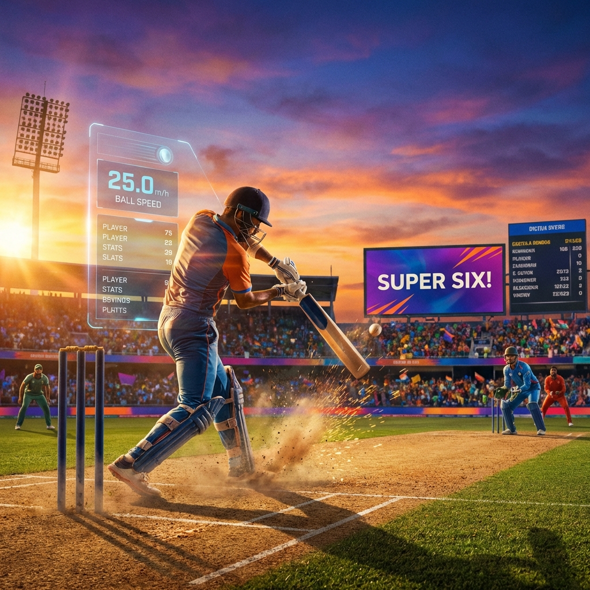

Cricket
Cricket is more than just a sport to me; it's about strategy, teamwork, and persistence. I find the physics of the game fascinating and enjoy the mental discipline it requires during high-pressure moments on the field.